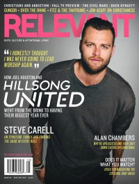

Joel Houston
|  September 2013 Relevant |
 May 2019 Relevant |
Media coverage:
- Jun 2006 in Charisma & Christian Life "A Passion for His Presence: Joel Houston", by Jomili Noble
- Jan 2010 in Charisma "A Sound From Down Under", by Nicole Partridge
- Jul 2010 in CCM Digital "Worship: Beauty Before the Cross: Encountering Christin Worship", by Emily Hoernschemeyer
- Jan 2011 in Relevant "How A Local Phenomenon Became A Global Movement... Without Losing Its Roots", by Adam Smith
- May 2011 in Relevant "What's The Point of Worship?", by Bonnie McMaken, Trevor McMaken
- Mar 2013 in Relevant "The QA: Joel Houston"
- Jun 2013 in Worship Leader "Table Talk: Joel Houston", by Jeremy Armstrong
- Sep 2013 in Relevant "Hillsong United", by Matt Conner
- Nov 2016 in Relevant "The Drop: Conversation: Joel Houston on Hillsong United"
- 15 Jun 2017 in CCM Digital "Right In Step", by Kevin Sparkman
- May 2019 in Relevant "Hillsong United", by Jesse Carey
Award Summary (Nominations / Wins)
Dove Awards- 2009 Dove Awards
- Song: "Mighty To Save"
- Songwriter
- Worship Song: "Touch The Sky"
© 2011 CMnexus. Last updated May 2025. Contact: editor -AT- cmnexus -DØT- org